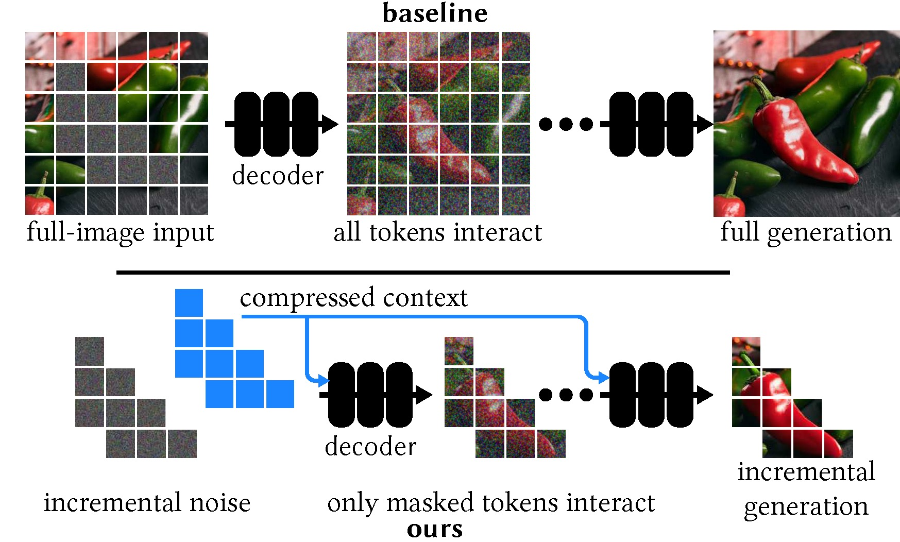
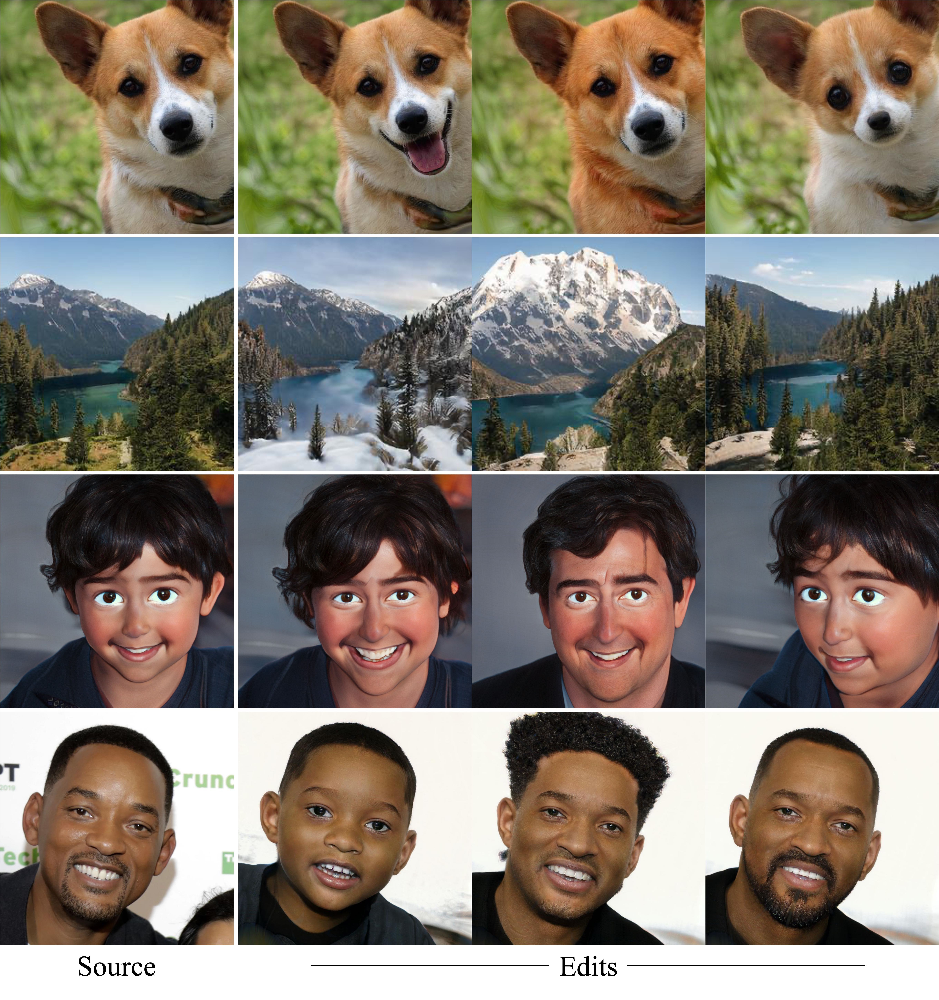
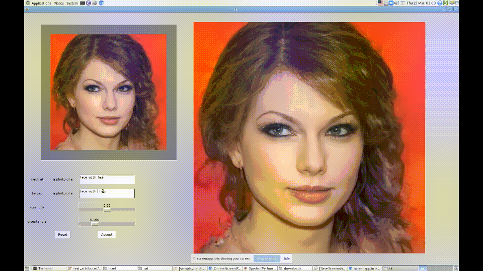
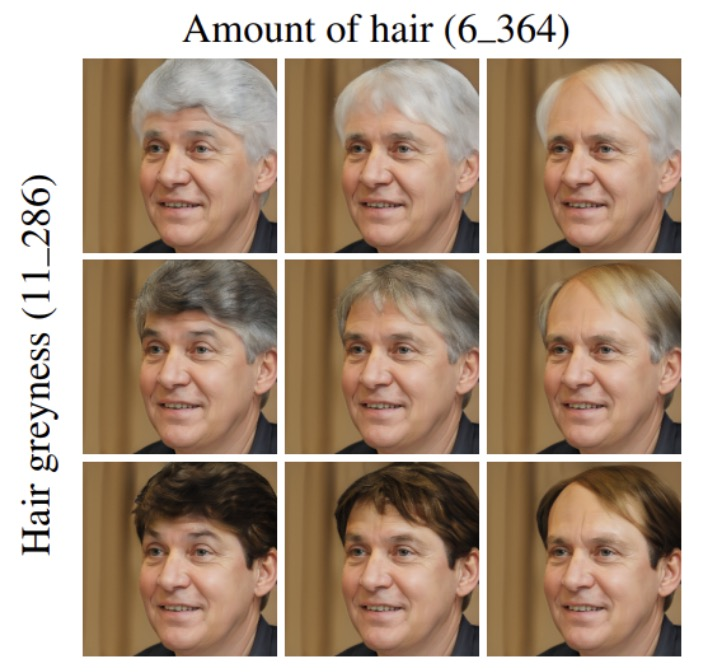
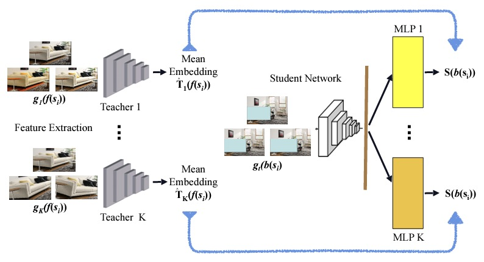

|
Zongze Wu I'm a research scientist/engineer at Adobe Research in San Francisco. At Adobe, I work with FireFly team for Structure Reference. I got my PhD degree at Hebrew University of Jerusalem in 2022, under supervision of Prof. Dani Lischinski and Eli Shechtman from Adobe Research. I got my bachelor degree at Tongji University in 2016. |
{kind=link}
ResearchMy main interests are in generative modelings (GenAI), including diffusion model, GAN, and autoregressive model. I work on multi-modality generation/editing tasks in including image, video and text. |

|
Turboedit: Instant text-based image editing.
Zongze Wu, Nicholas Kolkin, Jonathan Brandt, Richard Zhang, Eli Shechtman ECCV 2024, project page / arXiv / Video Users can upload an image, and edit the image with natural language. Each edit only takes half a second. |
|

|
Lazy diffusion transformer for interactive image editing.
Yotam Nitzan, Zongze Wu, Richard Zhang, Eli Shechtman, Daniel Cohen-Or, Taesung Park, Michaël Gharbi ECCV 2024 project page / arXiv Instead of generating the entire image, we only generate the mask region to facilitate fast inpaint task. |
|

|
Third time’s the charm? image and video editing with stylegan3.
Yuval Alaluf, Or Patashnik, Zongze Wu, Asif Zamir, Eli Shechtman, Dani Lischinski, Daniel Cohen-Or, AIM ECCVW 2022, project page / arXiv We show StyleGAN3 can be trained with unaligned image, and its w/w+ spaces are entangled than StyleGAN2. |

|
Stylealign: Analysis and applications of aligned stylegan models.
Zongze Wu, Yotam Nitzan, Eli Shechtman, Dani Lischinski ICLR 2022 (Oral Presentation) project page / arXiv The child model's latent spaces are semantically aligned with its parent's, inheriting incredibly rich semantics. |
|

|
Styleclip: Text-driven manipulation of stylegan imagery.
Or Patashnik*, Zongze Wu*, Eli Shechtman, Daniel Cohen-Or, Dani Lischinski ICCV 2021 (Oral Presentation) project page / arXiv / ICCV Video / Demo Video Text-based image editing through mapping CLIP space to StyleGAN latent space. |
|

|
Stylespace analysis: Disentangled controls for stylegan image generation.
Zongze Wu*, Dani Lischinski, Eli Shechtman CVPR 2021 (Oral Presentation) project page / arXiv / Video The space of channel-wise style parameters is significantly more disentangled than the other intermediate latent spaces in StyleGAN. |
|

|
Fine-grained foreground retrieval via teacher-student learning.
Zongze Wu*, Dani Lischinski, Eli Shechtman WACV 2021 arXiv / Video Retrieve foreground images that are semantically compatible with the background. |
|
|